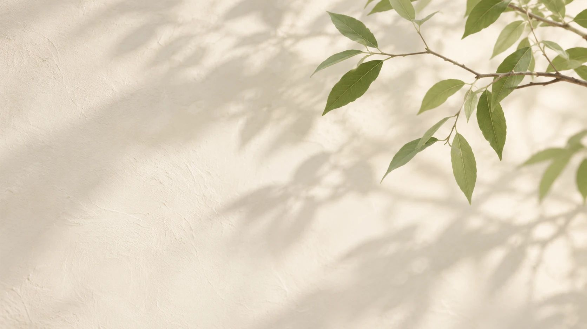
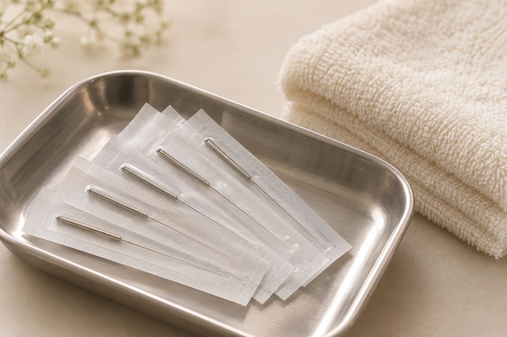
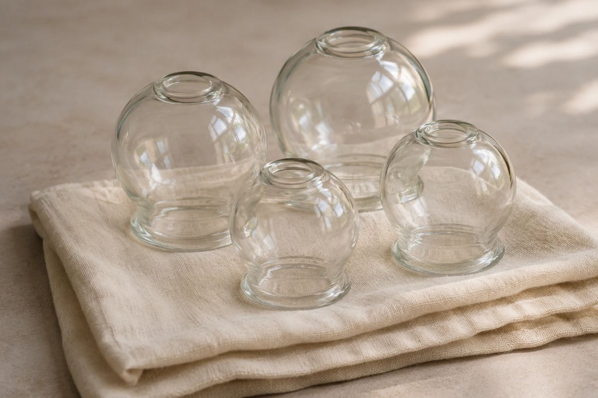

Acupuncture · Downtown Flagstaff
Acupuncture and Traditional Chinese Medicine in Flagstaff
Unhurried, personal care for pain, stress, sleep and more, at Barefoot Sage Center.
Our approach
A different kind of care
Traditional Chinese Medicine looks at the whole person, not just the symptom that brought you in. Every visit starts with listening, and every treatment is built around what your body needs that day.
Explore
Find your way around

What acupuncture can help with
From back pain to trouble sleeping, see what brings people in.
See the list
What a treatment is
Fine needles, a quiet room, and time to rest.
Learn more
Visits
Initial, return and couples visits.
See visits
Meet Amber
Paramedic turned acupuncturist.
Read her storyHow it works
Three simple steps
1
Book
Online or by phone, in a minute.
2
Your first visit
A full health history and a conversation, then your first treatment.
3
Follow up
Return visits adjusted to what has changed.